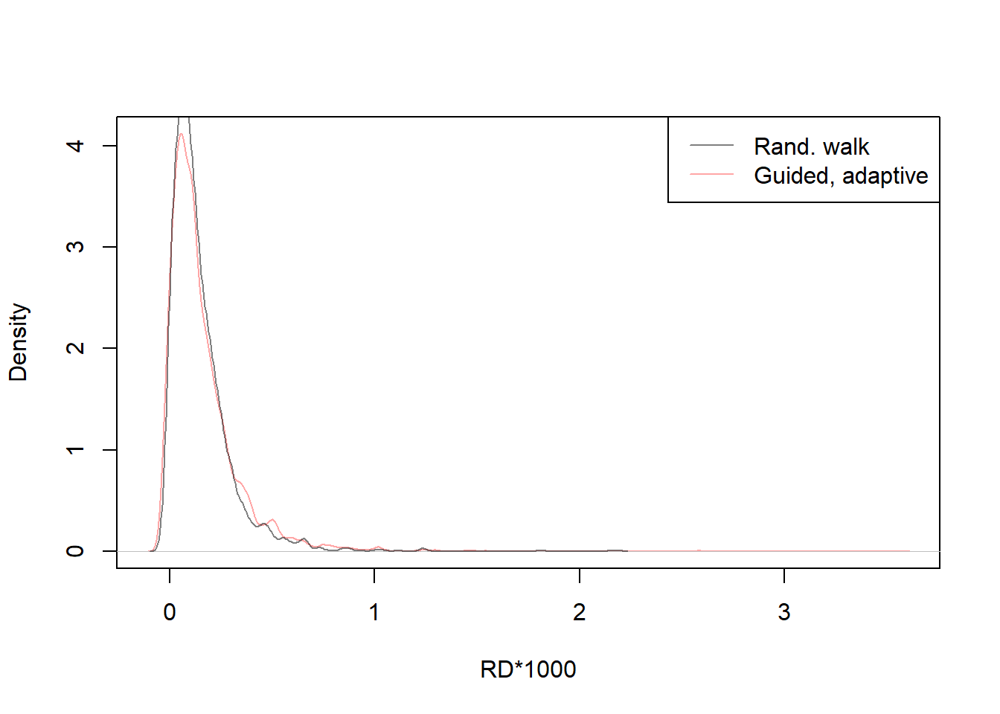

Chapter 6 Algoritmo de metrópolis guiado y adaptativo utilizando priores normales
# initialize
M=10000
burnin=1000
set.seed(91828)
beta_post_adaptguide2 = matrix(nrow=M+burnin, ncol=2)
colnames(beta_post_adaptguide2) = c('beta0', 'beta1')
accept = numeric(M+burnin)
rd_adaptguide2 = numeric(M+burnin)
beta_post_adaptguide2[1,] = c(2,-3)
rd_adaptguide2[1] = riskdifference(y,x,beta_post[1,])
accept[1] = 1
prop.sigma = c(0.2, 0.2)
dir = 1
for(i in 2:(M+burnin)){
if((i < burnin) & (i > 25)){
prop.sigma = apply(beta_post_adaptguide2[max(1, i-100):(i-1),], 2, sd)
}
oldb = beta_post_adaptguide2[i-1,]
prop = dir*abs(rnorm(2, sd=prop.sigma))
newb = oldb+prop
num = loglik(y,x,newb) + dnorm(newb[1], mean=0, sd=sqrt(100), log=TRUE) + dnorm(newb[2], mean=0, sd=sqrt(0.5), log=TRUE)
den = loglik(y,x,oldb) + dnorm(oldb[1], mean=0, sd=sqrt(100), log=TRUE) + dnorm(oldb[2], mean=0, sd=sqrt(0.5), log=TRUE)
acceptprob = exp(num-den)
acc = (acceptprob > runif(1))
if(acc){
beta_post_adaptguide2[i,] = newb
accept[i] = 1
}else{
beta_post_adaptguide2[i,] = oldb
accept[i] = 0
dir = dir*-1
}
rd_adaptguide2[i] = 1000*riskdifference(y,x,beta_post_adaptguide2[i,])
}
postmean = apply(beta_post_adaptguide2[-c(1:1000),], 2, mean)
cat("Posterior mean, guided and adaptive\n", round(postmean, 2))Posterior mean, guided and adaptive
-1.75 0.546.1 Inspeccion de salida
[1] 0.5552727init = beta_post_adaptguide[1,]
postmean = apply(beta_post_adaptguide[-c(1:1000),], 2, mean)
cat("Posterior mean, uniform priors\n", round(postmean, 2))Posterior mean, uniform priors
-1.78 1.22init2 = beta_post_adaptguide2[1,]
postmean2 = apply(beta_post_adaptguide2[-c(1:1000),], 2, mean)
cat("Posterior mean, informative normal priors\n", round(postmean2, 2))Posterior mean, informative normal priors
-1.75 0.54par(mfcol=c(1,2))
plot(beta_post_adaptguide, pch=19, col=rgb(0,0,0,0.05), xlab=expression(beta[0]), ylab=expression(beta[1]), xlim=c(-2.5,2.5), ylim=c(-4.5,4.5), main="Uniform priors")
points(init[1], init[2], col="red", pch=19)
points(postmean[1], postmean[2], col="orange", pch=19)
legend("topright", col=c("red", "orange"), legend=c("Initial value", "Post. mean"), pch=19)
plot(beta_post_adaptguide2, pch=19, col=rgb(0,0,0,0.05), xlab=expression(beta[0]), ylab=expression(beta[1]), xlim=c(-2.5,2.5), ylim=c(-4.5,4.5), main="Informative priors")
points(init2[1], init2[2], col="red", pch=19)
points(postmean2[1], postmean2[2], col="orange", pch=19)
legend("topright", col=c("red", "orange"), legend=c("Initial value", "Post. mean"), pch=19)
par(mfcol=c(1,2))
plot(beta_post_adaptguide[,2], type='l', ylab=expression(beta[1]), xlab="Iteration", ylim=c(-4, 4))
plot(beta_post_adaptguide2[,2], type='l', ylab=expression(beta[1]), xlab="Iteration", ylim=c(-4, 4))
plot(density(beta_post_adaptguide[-c(1:1000),2]), xlab=expression(beta[1]), ylab="Density", main="", xlim=c(-4, 4))
plot(density(beta_post_adaptguide2[-c(1:1000), 2]), xlab=expression(beta[1]), ylab="Density", main="", xlim=c(-4, 4))
par(mfcol=c(2,1))
plot(rd_adaptguide, type='l', ylab="RD*1000", xlab="Iteration", ylim=c(-.2, .5))
plot(rd_adaptguide2, type='l', ylab="RD*1000", xlab="Iteration", ylim=c(-.2, .5))
plot(density(rd_adaptguide[-c(1:1000)]), xlab=expression(beta[1]), ylab="Density", main="", xlim=c(-.2, .5))